一期画布要求用户自己建节点、写提示词再点生成。不会搭流程的人，从一句想法到可生成的镜头之间断掉了。
本期用首页技能和画布右侧 Agent，把创作分镜、剧情短片接到同一张画布上。模型负责写文案和准备节点。图片、视频、配音仍由用户确认费用后才提交供应商。
要解决的问题：技能发送后能进入对应会话；剧情先落在文本节点并经用户确认；确认后再建视频节点并连线；媒体生成不会在用户未确认时打到上游。
业务对象是短剧、短视频创作者。预期结果是：发送后画布上出现剧情文本节点；确认后出现视频草稿并连上文本；文案费用在发送时结算；媒体费用只在确认卡或节点生成按钮提交后结算。
观察指标：技能发送后的画布打开率、剧情确认率、媒体确认后的生成转化。
| 功能ID | 功能模块 | 功能名称 | 功能描述 | 备注 |
|---|---|---|---|---|
| AG-01 | 入口 | 技能发起会话 | 首页「画布」Tab 或画布 Agent 选择技能并发送；首页发送会创建项目、打开画布并展开 Agent。 | 只选技能不能发送 |
| AG-02 | 会话 | 模式锁定 | 创作分镜、剧情短片各自锁住本条会话。顶栏只展示已锁模式，不可切换。 | 换技能需新建会话 |
| AG-03 | 计费 | 文案生成 | 分镜文案、剧本文案、镜头文案随用户发送扣费，不弹确认卡。 | 预留、成功扣、失败释放 |
| AG-04 | 创作分镜 | 剧情文本与确认 | 先写文本节点待确认。确认后再建视频节点并连上文本。改剧情写在文本节点。 | 对话剧情块可定位节点 |
| AG-05 | 剧情短片 | 剧情文本与确认 | 先写文本节点。确认剧情后再建一个视频节点并连上剧情。 | 确认剧情不扣费 |
| AG-06 | 计费 | 媒体确认 | 图片、视频、配音提交前展示点数。确认后才打供应商。 | 与节点生成按钮同一次提交 |
| AG-07 | Agent | 内容类型选择 | 未选技能且看不出类型时，让用户选视频、图片或文本。 | 不追加「先写大纲」 |
| AG-08 | 引用 | Agent @ 与节点 @ | Agent @ 可引节点与主体（分类：主体/图/视频/音频/文本）；节点 @ 随节点类型变化。首页 @ 只列主体。 | 参考即梦交互 |
| AG-09 | 会话 | 切换与面板 | 展开、收起、切换、新建会话。画布内可打开或关闭 Agent。 | 不取消已提交任务 |
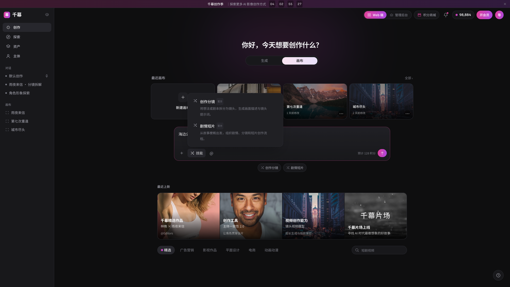
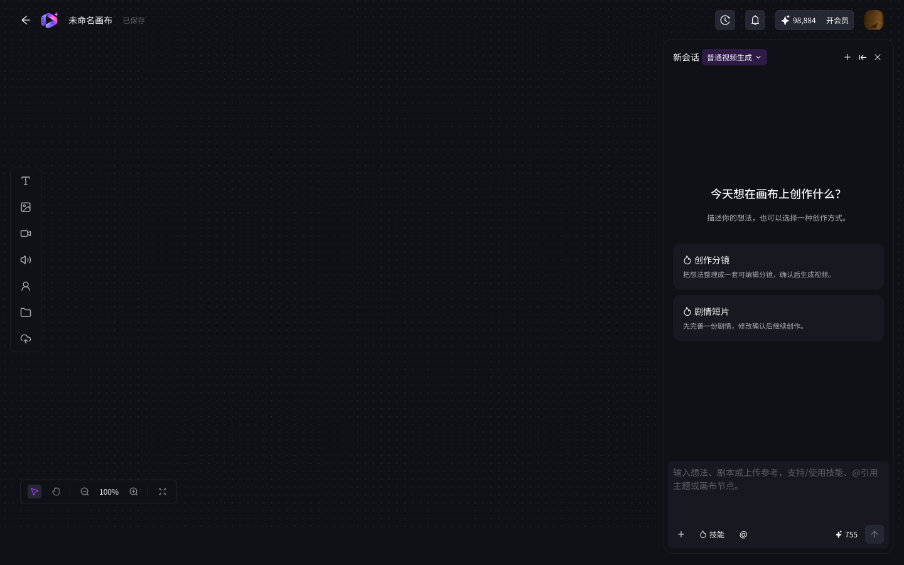
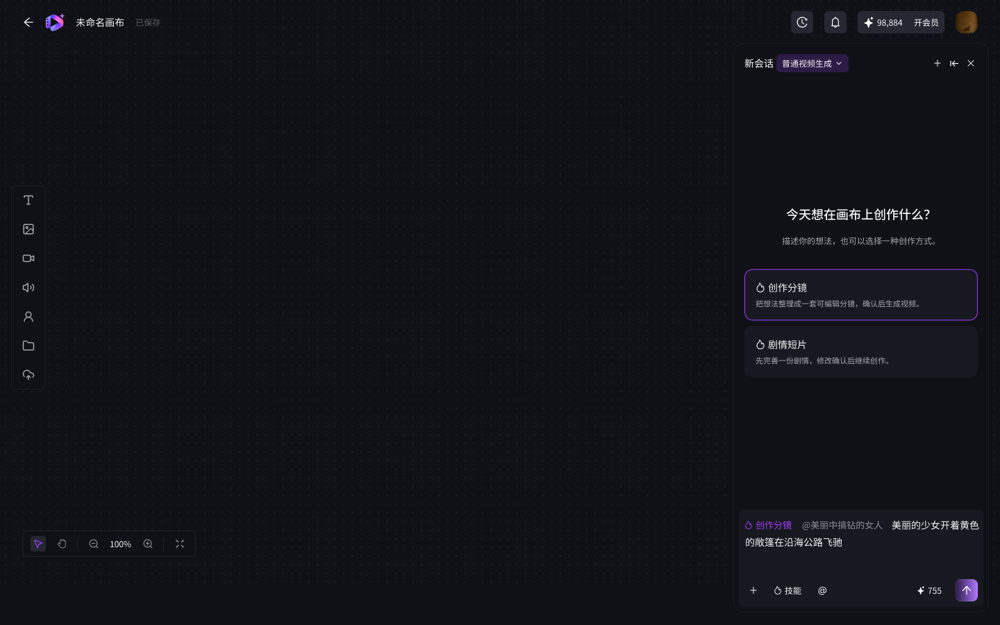
用户可从首页或画布发起。首页在「画布」Tab 的输入区选择「创作分镜」或「剧情短片」，写上正文或放上已传完的附件后发送：系统创建项目、打开画布并展开 Agent。画布内也可在 Agent 空会话或输入区选同一套技能后发送。会话从发送时锁住对应模式。顶栏展示已锁模式，不可从顶栏切换。要换技能，新建会话。
首页：技能菜单、输入 /、输入条下方快捷标签，状态一致。画布：空会话技能卡片与输入区「技能」菜单一致。画布内可打开或关闭 Agent 面板。
草稿（正文、技能、附件、引用）写入新会话并锁定模式。文案任务预留点数。成功后把剧情写入文本节点并扣费。失败则释放预留，不留下空节点。
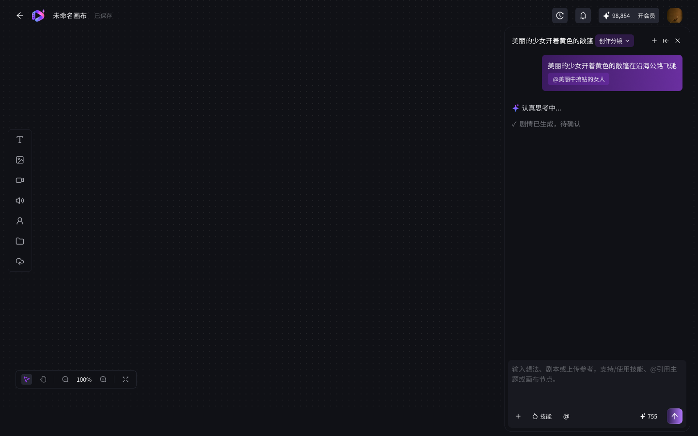
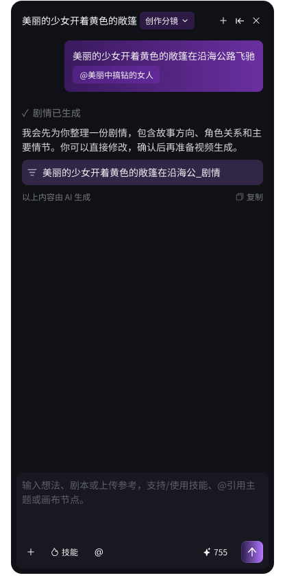
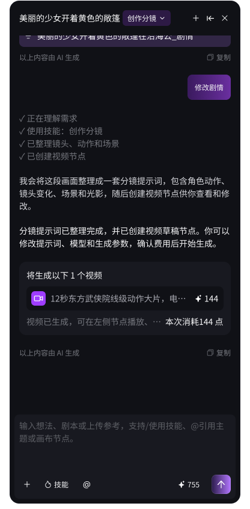
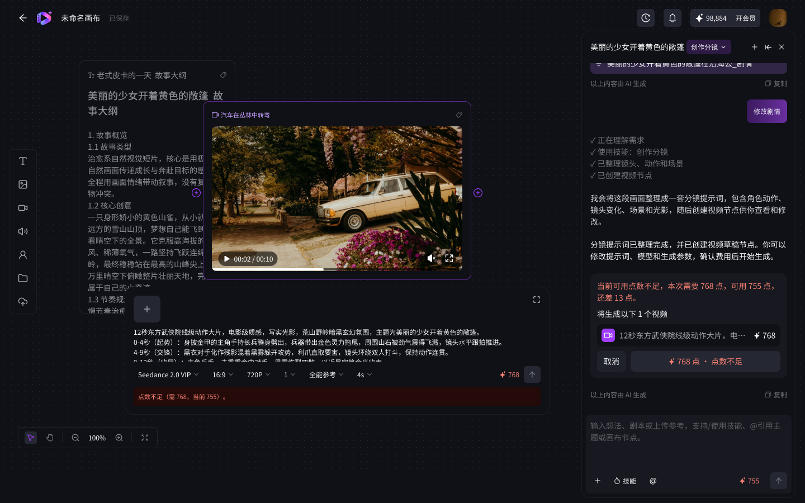
创作分镜锁定后，模型先输出一份剧情（待确认），写入一个文本节点。不直接创建视频节点，也不把剧情写进视频提示词。用户确认剧情之后，才创建一个视频草稿，并把该文本节点连到视频上。然后给出视频费用确认。
修改剧情写在文本节点上。手改不另扣文案费；要求模型重写则本次发送再扣一次，仍不弹确认卡。Agent 对话中的剧情块可点击，定位到对应文本节点。
确认卡写明节点、数量、提示词摘要和点数，提供取消与确认。取消不提交，已写上画布的文案保留。顶栏只展示「创作分镜」，不可切换。
发送 → 预留文案点数 → 写入文本节点 → 成功扣费 → 用户确认剧情 → 创建视频节点并连线 → 用户确认媒体 → 预留媒体点数 → 提交供应商 → 成功扣费并回写；失败释放预留，保留旧结果。
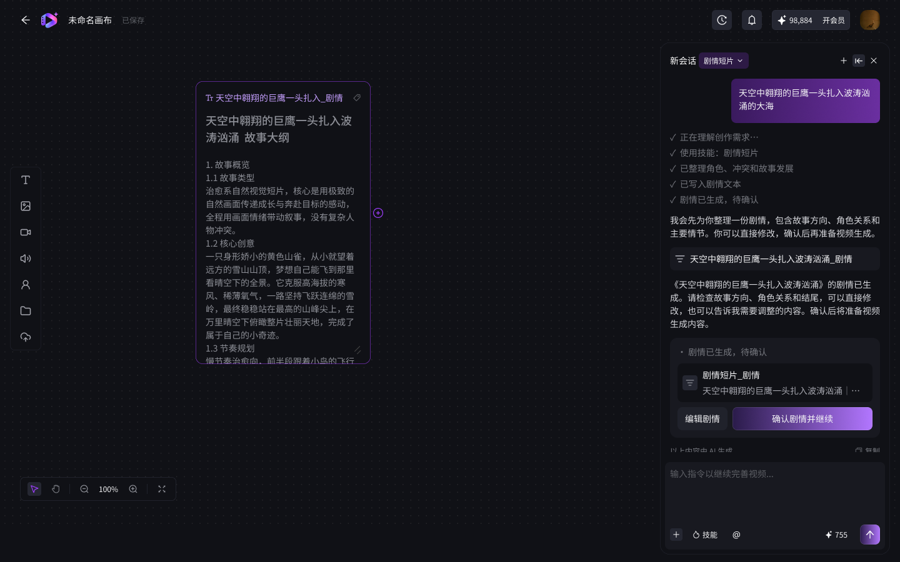
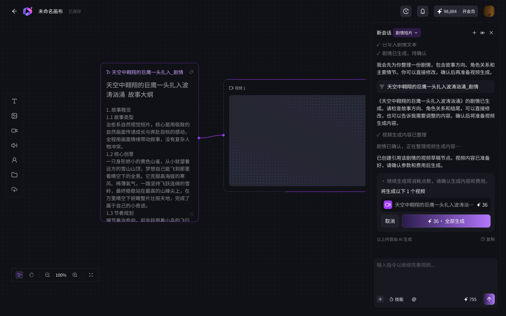
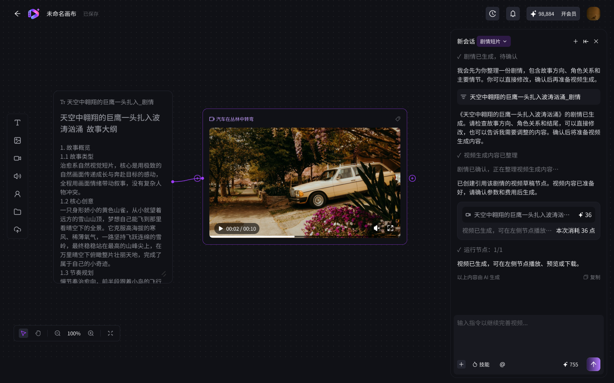
发送后先生成一篇剧情，写入一个文本节点。这篇剧情按文案扣费，发送即确认。用户可在对话或节点里修改，修改直接落在这个文本节点上。手改不扣费；让模型重写则再扣一次文案费。
用户确认剧情之后，才按当前剧情创建一个视频草稿，并把剧情文本连到该视频上。确认剧情不扣费，也不提交供应商。生成视频仍要费用确认。
剧情写在文本节点和对话里，用户点确认剧情后，画布上出现视频节点和连线。费用确认的交互与创作分镜的视频确认相同。
发送 → 剧本文案预留并写入文本节点 → 成功扣费。确认剧情 → 创建视频节点，提示词取自当前剧情，并记录来自该文本节点的引用。媒体确认之后的预留、扣费、回写与 AG-06 相同。
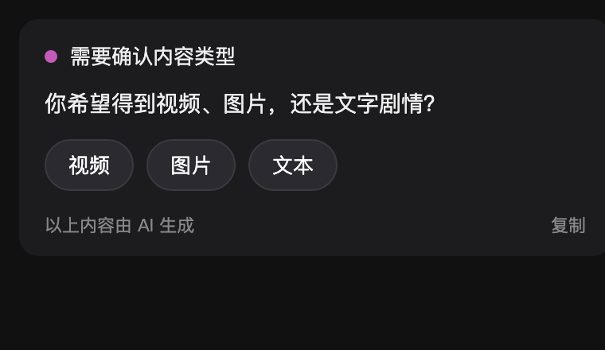
这条会话不进入创作分镜或剧情短片。用户的话已经写明要视频、图片或文字时，直接按该类型继续。看不出来，或只有附件没有说明类型时，先让用户在对话里选视频、图片或文本。选定之前不建节点，也不扣费。
三个选项为视频、图片、文本。点选相当于用户的一次明确输入，会话继续，不新建项目。
用户不点选而发送了一句仍然看不出类型的话：再次给出这三个选项，不扣费，不建节点。
类型选择只写入当前会话，作为下一步调用文案或媒体工具的条件。不单独产生扣费记录。
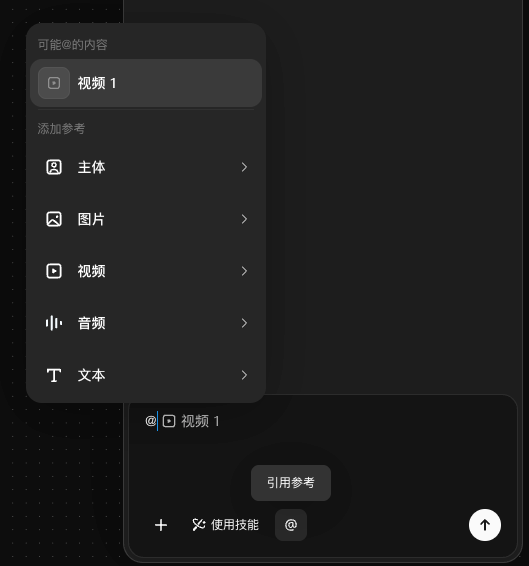
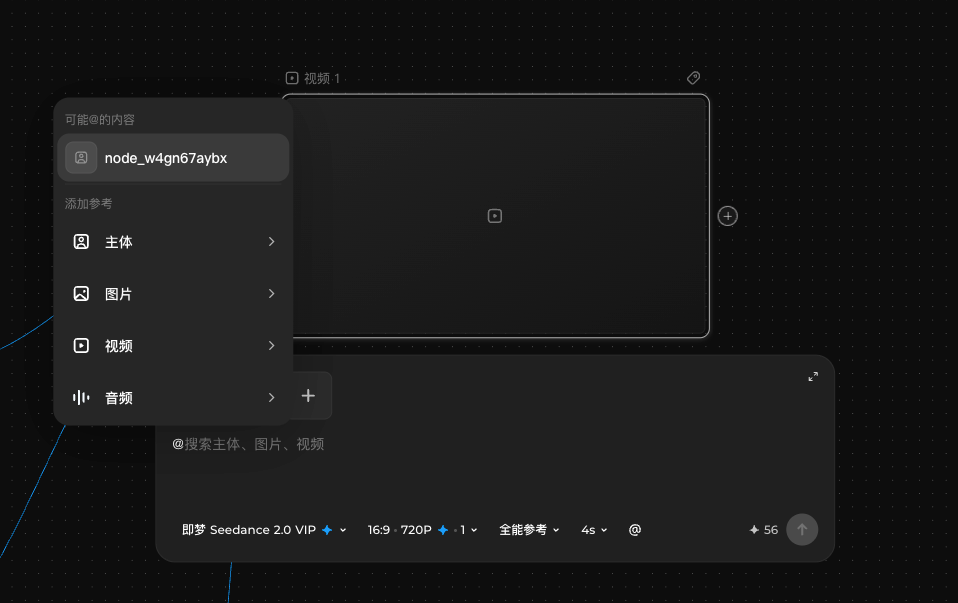
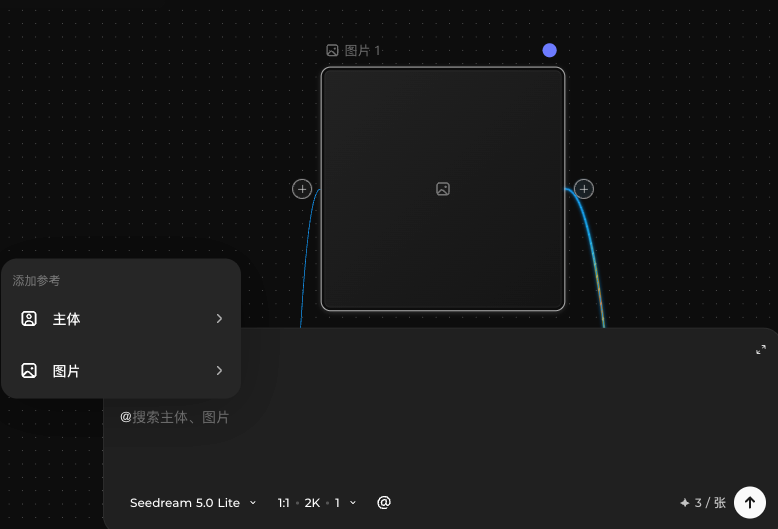
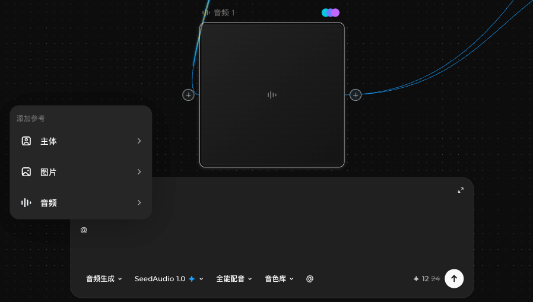
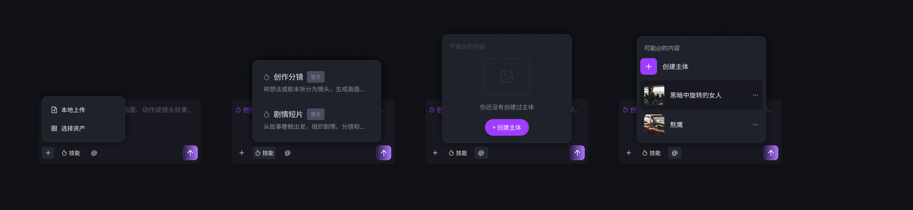
@ 有两个入口，菜单不一样。形态对齐即梦：上半「可能@的内容」，下半「添加参考」按类型再选。插入后绑定 ID，输入里显示为标签。
Agent @ 面向会话：可引用当前画布各类节点和主体。节点 @ 在某个节点的提示词里触发，只出现该节点类型允许的参考，不照搬 Agent 全量列表。
点 @ 或输入 @ 打开菜单。选中后写入引用标签。Agent 侧写入本条消息引用列表；节点侧写入该节点参考并尝试连线。
Agent @ → 本条消息引用列表（ID）。节点 @ → 节点参考关系 + 一期连线。模型每一轮只看见当前会话对话、本会话创建的节点、以及 @ 进来的节点和主体。
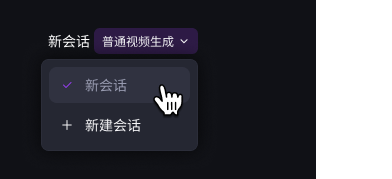
面板可展开、收起。顶部切换本画布会话、新建会话。画布内可打开或关闭 Agent。新建会话不带上一条的节点；画布节点还在，只是新会话看不见。
收起后再打开，恢复当前会话、未确认的媒体卡片和任务状态。
会话切换只更换模型可见材料和聊天记录，不改画布，不取消任务。
截图目录：qianmu/assets。点击左侧截图可放大查看。@ 截图为即梦参考交互；千幕实现以本页 AG-08 为准。类型选择（AG-07）暂无新 UI，沿用旧原型示意。